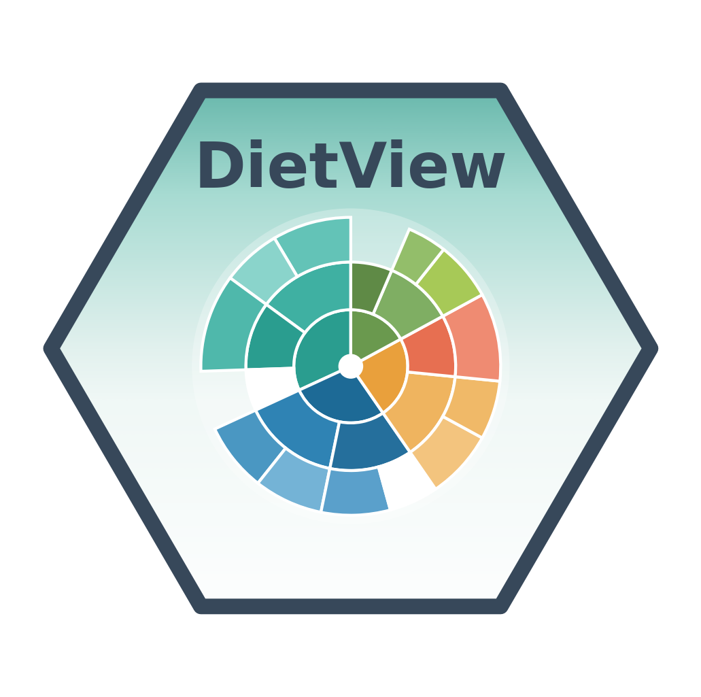

Prepare a diet table for DietView (validate + add taxa)
Source:R/dv_prepare.R
dv_prepare.RdValidates the long table and attaches the taxonomic lineage for the declared ranks. The taxonomy can come from:
"columns"- the rank columns are already indata;"worms"- fetch the lineage from WoRMS by AphiaID/name;"table"- join a lineage lookup you supply vialineage;"auto"- use columns if present, elselineageif given, else WoRMS.
Ranks that cannot be resolved are kept as NA and later shown as the explicit
"NA" category – never dropped.
Usage
dv_prepare(
data,
spec,
taxonomy = c("auto", "columns", "worms", "table"),
lineage = NULL,
fuzzy = TRUE,
cache_dir = tools::R_user_dir("DietView", "cache"),
verbose = TRUE
)Arguments
- data
A data.frame (the long diet table).
- spec
A
dietview_specfromdv_spec().- taxonomy
One of "auto", "columns", "worms", "table".
- lineage
For
taxonomy = "table": a data.frame with a key column (prey_idorprey_name, matching your spec) plus one column per rank.- fuzzy
For
taxonomy = "worms": allow fuzzy name matching as a fallback when the exact name fails (defaultTRUE). Fuzzy hits are flagged, never silent - review them withdv_taxonomy_report().- cache_dir
Cache directory for the WoRMS path.
- verbose
Print progress.
Value
An object of class dietview_prep. When taxonomy = "worms", it also
carries $taxonomy_log, the per-prey provenance table.
Examples
csv <- system.file("extdata", "dietview_example.csv", package = "DietView")
lin <- system.file("extdata", "dietview_example_lineage.csv", package = "DietView")
dat <- read.csv(csv, na.strings = c("NA", ""))
lineage <- read.csv(lin, na.strings = c("NA", ""))
spec <- dv_spec(predator = "predator_species_common_name",
stomach = "stomach_id",
prey_id = "aphia_id",
prey_name = "verified_name",
weight = "prey_weight")
prep <- dv_prepare(dat, spec, taxonomy = "table", lineage = lineage,
verbose = FALSE)
#> No digestion column: digestion diagnostics disabled.
prep
#> <dietview_prep>
#> records : 24
#> predators : 3
#> ranks : kingdom > phylum > class > order > family > genus > species
#> covariates:
if (FALSE) { # \dontrun{
# online: resolve prey against WoRMS (needs 'worrms' + internet)
prep <- dv_prepare(dat, spec, taxonomy = "worms")
} # }